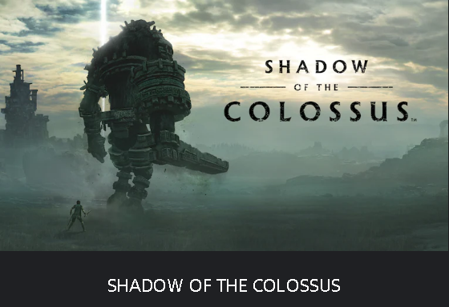

Shadow Of The Colossus
Recriado do zero pela Bluepoint Games e o JAPAN Studio,
SHADOW OF THE COLOSSUS no sistema PlayStation 4 apresenta seu pavoroso e inesquecível mundo repleto de imponentes criaturas a uma nova geração de jogadores, enquanto possibilita aos antigos fãs revisitar o clássico com fidelidade visual incomparável e desempenho melhorado.
As histórias falam de um antigo reino onde os Colossi dominam a majestosa paisagem. Ligadas à terra, essas criaturas possuem o segredo para um místico poder de ressurreição, um poder que você deve obter para trazer seu amor de volta à vida.
SHADOW OF THE COLOSSUS é uma jornada espetacular por terras antigas em busca de feras gigantes. Armado com uma espada e um arco, explore os vastos terrenos e revele cada Colossus, cada um com um desafio único para testar sua inteligência, determinação e habilidade.

O SHADOW OF THE COLOSSUS ganhou um remake recente que garantiu o gameplay clássico juntamento com gráficos lindos, deixando a jornada lendária mais intensa e gratificante.
Trailler Shadow Of The Colosssus